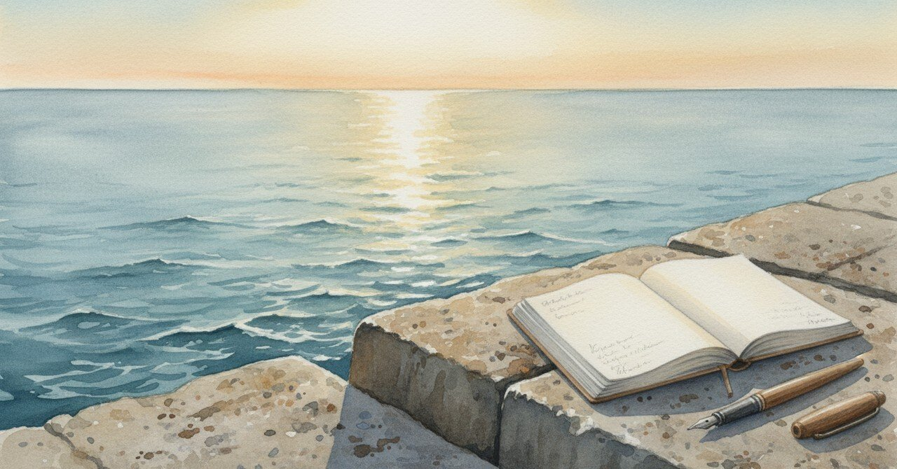

海で20分書いた日、駐車位置を間違えた

カーシェアの返却時間に間に合わせて駐車場まで戻ったら、停めるはずだったブロックを一つ間違えていた。 身体は疲れていなかった。連日8時間、開発を詰めていたからむしろ「今日はちゃんと休んだ」と思っていた。
海まで20分
2026年4月25日、夕方。 車で海まで走って、堤防に座って、ノートを開いて20分書いた。 題目はなくて、ただ手を動かして出てくる言葉を写すだけ。エクスプレッシブライティング。
書きながら気づいたのは、母のことだった。 小学校の頃、母は何かあると私を岸壁に連れていった。理由を聞いたことはない。岸壁に着いたら、しばらくふたりで黙って海を見て、それで帰る。今思えば、母は母なりに整える場所を持っていた。
海を見ながらノートを書いている自分の隣に、その時の母がいる気がした。 40歳を過ぎてから初めて、自分が「母から継いだ整え方」を使っていることに気づいた。
その日のメモには、もうひとつ書かれていた。 「余白を恐れている自分がいるかもしれない」
駐車を間違えた
帰ってきて、駐車を間違えた。 普段ならありえない。タイムズの場所も、ブロック番号も、毎回確認する。
その夜、ジャーナリングを書きながら、駐車ミスのことを「身体のサインかもしれない」と置いた。 連日の開発で、身体は「足りてないよ」と言っていた。「ちゃんと休んだ」と思っていたのは頭の側で、身体はもう信号を出していた。
書き終えたあと、半年くらい前に書いた別のノートを思い出した。
4つの言葉が立ち上がった夜
2025年6月13日、私のバリューランタンを描いた。 「自分はどんな価値を大切にして、どんな関わり方をしたいのか」を、4つの言葉で書き出す作業。
書き出されたのは4つだった。
言葉でつなぐ——「文章にした瞬間に、ざわついていた心が静かに整い、あたたかくなる」
共鳴する静けさ——「言葉がなくても『そっち向いてるよ』とわかる距離感」
誠実な対話——「立場や形式ではなく、真意を持って向き合ってくれる関係」
本音のぶつかり合い——「気まずくても、逃げずに本音を出し合えること」
書きながら涙が出そうになった。 4つとも、ずっと前から自分の中にあった。ただ、それを言葉にしたことがなかっただけだった。
ランタンを描いて並んだ4行を見たとき、「自分のことだ」と思った。 どこかから借りてきた価値観じゃなくて、自分の中から出てきた4つだった。
海と駐車ミスとランタンが、ひとつにつながる
去年の6月の4行と、今年の4月の海でのメモは、同じ筋でつながっている。
身体を空にしたあとに、ノートを開く。 そこに勝手に出てきたものを、整えずに写す。 そうやって書かれたものが、自分の言葉になる。
机の前で粘って書いた言葉は、3週間後には自分でも信じられなくなっている。 海で20分書いたものや、ランタンに並んだ4行は、何ヶ月経っても色が褪せない。
駐車を間違えたあとで気づいたのは、その違いだった。 「ちゃんと休んだ」と頭で思っていても、身体を空にする時間が無いと、自分の言葉が立ち上がらない。
4つの言葉と、海で出てきた1行
去年の6月のランタンに並んだ4つの言葉と、今年4月25日の海でのノートに残った「余白を恐れている」は、たぶん同じ場所から出てきている。
「余白を恐れている」と書いた4月の自分は、6月の4つの言葉のうち、どれを忘れかけていたか。 たぶん、共鳴する静けさだった。言葉がなくても向き合える時間。何もしないで隣に座っていられる時間。
開発を詰めて、SNSの自動化を組んで、毎日ノートに書いて、走って、筋トレして——全部「ちゃんとやれている」感じはあった。でも、共鳴する静けさだけは、削れていた。
駐車を間違えた夜、その削れに気づいた。
海で20分書く時間は、年に何度かは要る。 「ちゃんとやれている」と思っているうちに、4つのうちのどれかが、いつの間にか細くなっていく。
#エクスプレッシブライティング #ジャーナリング #バリューランタン #内省 #個人開発 #日記 #エッセイ #AkariLab